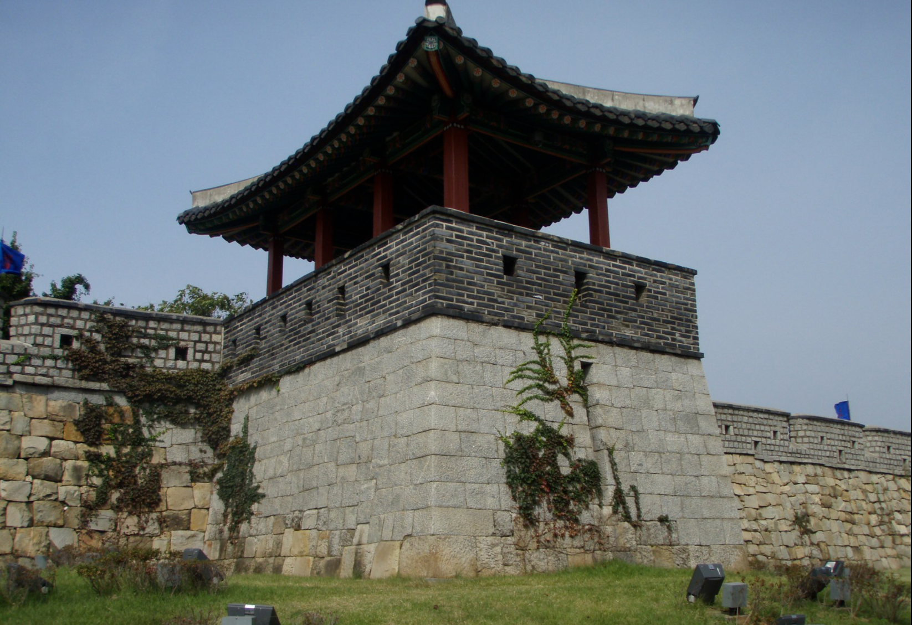

동이포루
- 수원 동이포루
- 경기 수원시 팔달구 지동 301-97에 위치한 포루(舖樓)는 성곽을 바깥으로 튀어나오게 만든 치성 위에 지은
목조건물이며 군사들이 망을 보면서 대기하는 곳이다. 동이포루는 화성의 5개 포루 중 동쪽에 위치하며
1796년(정조 20) 7월 3일에 완공되었다. 평탄하고 넓은 지형에 위치하고 있으며 봉돈을 방어하기 위하여 설치하였다.
동이포루
- 수원 동일포루
- 동일포루(東一舖樓)는 창룡문 남쪽에 위치하고 있다. 건물은 1796년 (정조 20년) 7월 10일에 준공되었다.
포루는 정면 1칸, 측면 3칸의 중층으로 3량의 우진각지붕을 갖추었다. 하층 주위의 3면은 여장으로 둘려져 있고, 원근총안(遠近銃眼)을 내었다.
상층 동측 2칸은 마루를 갈고 1칸은 통 2층으로 하여 목조 사다리를 설치하였다.

동이포루
- 수원 봉돈(烽墩)
- 봉돈(烽墩)은 불을 비추어 행궁을 수비하고 성을 수비하며 주위를 정찰하여 사태를 알리는 군사 및 교통상의 신호 시설물이다.
봉돈은 화성 동문의 서남쪽에 있으며, 5개의 연기구멍을 갖추어 신호를 보낼 수 있도록 되었다. 1796년 (정조 20년) 6월 17일에 완공되었다.
성벽 일부를 밖으로 돌출시키고 하층은 석축으로 쌓고, 위는 전축으로 성벽보다 높이 쌓아 위쪽에 여장을 두었다. 내부는 3층의 계단식으로
만들어서 가장 높은 곳에 5개의 횃불 구멍인 화두(火竇)를 설치하였다. 여장 3면에는 포혈 18개를, 그 아래 3면 벽성(甓城)에는 총안 18개와 누혈(漏穴) 1개를 뚫었다.
밤에는 불, 낮에는 연기로 신호를 보냈다.